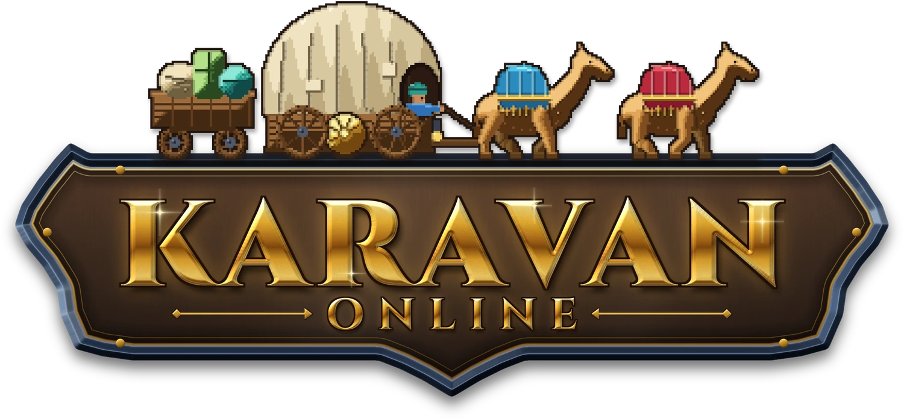
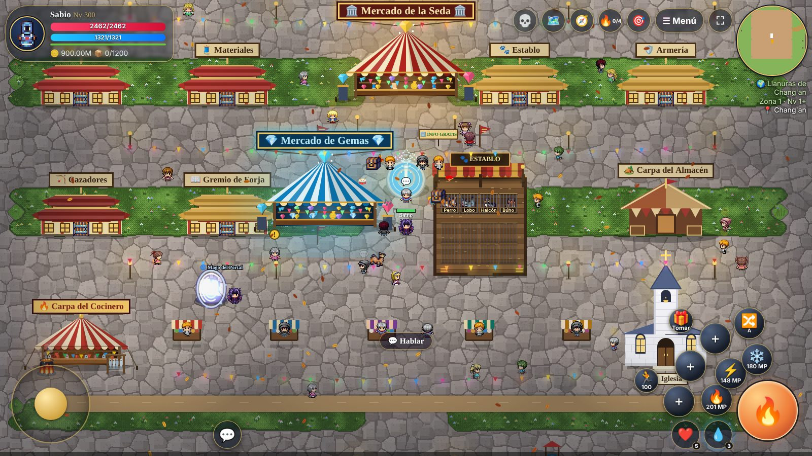
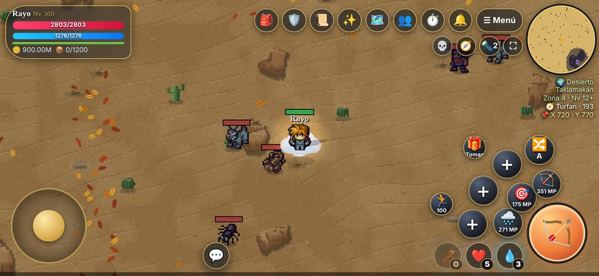
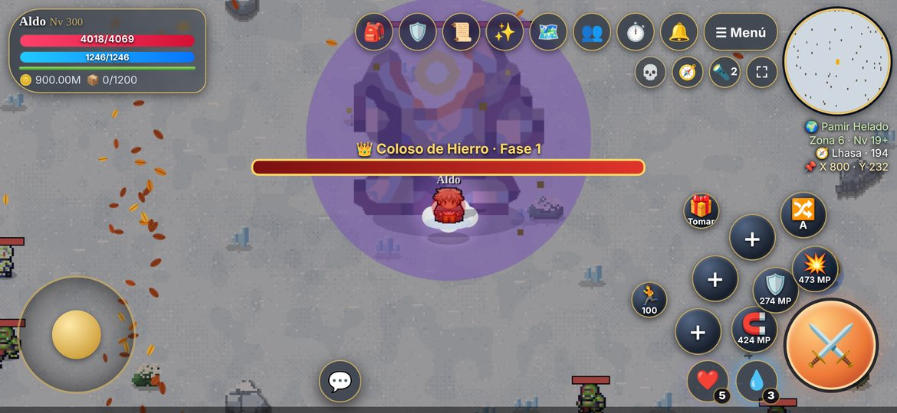
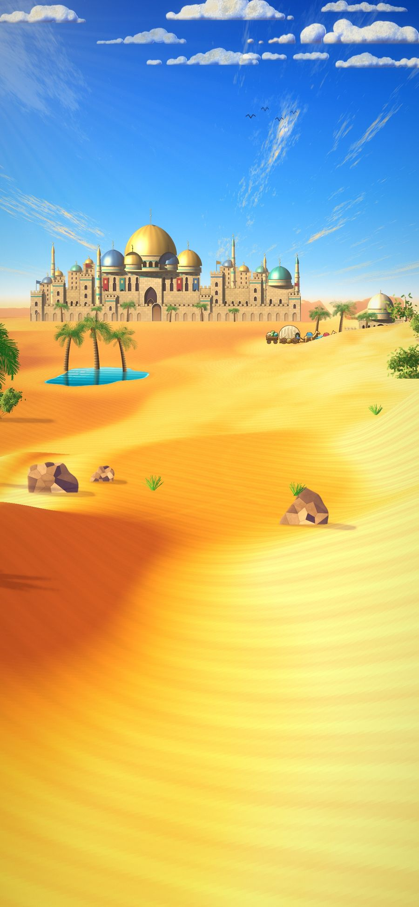

Karavan Online · MMORPG de caravanas para navegador

Cruza el desierto con tu caravana, elige entre 8 héroes y conquista cuevas, dragones y ciudades-oasis. Gratis, sin descargas.
- 🆓 Gratis
- 🌐 Sin descargas
- 📱 PC · Android · iOS
- 👥 Mundo en línea
Un mundo hecho para cruzarse
Ocho héroes, una sola Ruta
Cada clase tiene su estilo, sus habilidades y su propia leyenda. Toca una carta para ver a tu héroe tal como se ve en el juego, con su historia, sus habilidades y sus apariencias.
Tesoros de la Ruta
Más de 4.700 objetos en cuatro rarezas: armas, armaduras, joyas, pociones, minerales, monturas y apariencias. Aquí, las armas legendarias de cada clase.
Lo que te espera
Juega donde quieras
Karavan Online corre directo en el navegador: la misma cuenta y el mismo personaje en tu PC, tu Android y tu iPhone.



Fondos de pantalla
La ciudad dorada, el oasis y una caravana en marcha. Descárgalos gratis para tu computadora o tu celular.


⬇ Fondo celular
Tu leyenda empieza hoy
Elige tu clase, arma tu caravana y escribe tu leyenda en la Gran Ruta.